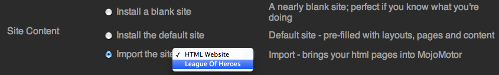

Importing an existing website
Importing during Installation
After you've prepared your site for import, move it into the /import directory. From there it will be automatically detected by the MojoMotor Install Wizard. Simply select it in from "Site Content" under your "Site Settings" options.

During the installation process, MojoMotor will search for your existing site and offer to import it.